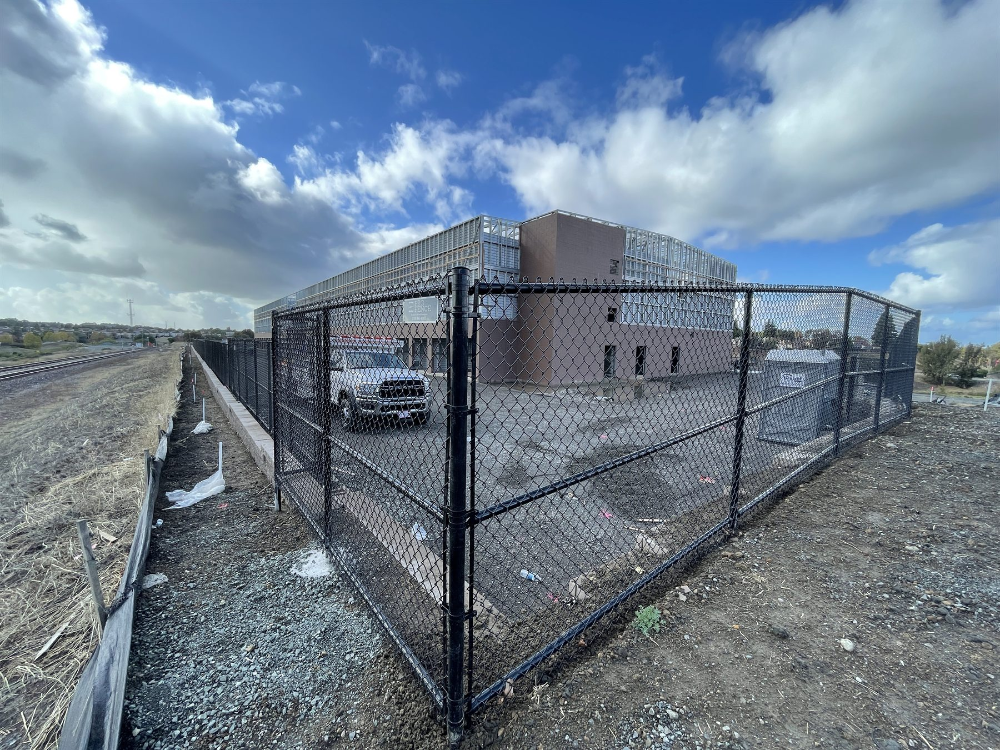
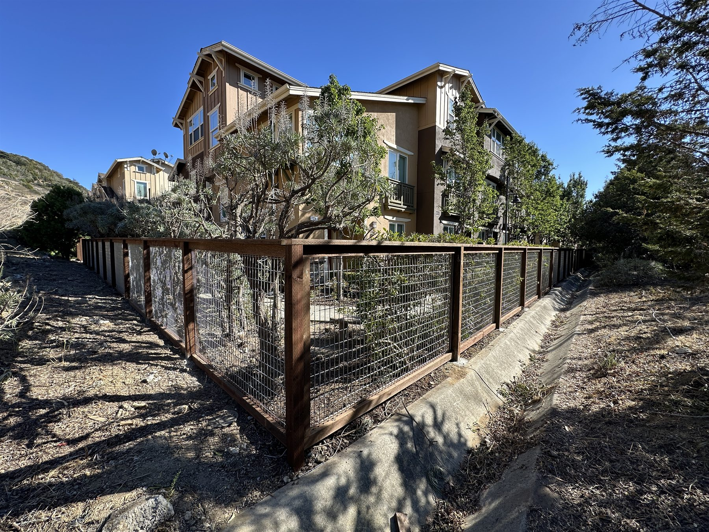

Railings and Elevation Changes
Metal railings for stairs, decks, overlooks, and transitions where safety and finish quality both matter.
- Stair and landing railings
- Deck and overlook safety
- Custom fabricated details
Berkeley Fence Company
Pro Fence Company serves Berkeley from Hayward with work that fits hillsides, stairs, mixed-material boundaries, older layouts, and detail-heavy exterior upgrades. That can mean railings, gates, wood fences, repairs, or practical security fencing where the site conditions are not simple.
Berkeley Projects
Good Fit Projects

Metal railings for stairs, decks, overlooks, and transitions where safety and finish quality both matter.

Wood-and-wire or other hybrid fence layouts that work well where visibility, slope, and appearance all matter.

For properties that need access control, a stronger gate setup, or repair work that looks deliberate when it is done.
Why Clients Call Us
Some Berkeley properties bring stairs, hillsides, older site conditions, and mixed-material exterior work into the same job. That is why railings, gates, repairs, and more custom-looking fence layouts are such a strong fit here.
Because Pro Fence is based in Hayward and serves properties within 50 miles, Berkeley clients can still get responsive service and a crew that understands harder site conditions.
Common Berkeley Needs
Berkeley FAQs
Yes. Berkeley is inside the 50-mile service radius, and we serve projects there from Hayward.
Yes. Railings, mixed-material fencing, and detail-heavy exterior work are all a good fit for Berkeley projects.
Yes. The work does not have to be a large custom project. Gates, repairs, and targeted upgrades are still a good fit.
Berkeley Fence Estimate